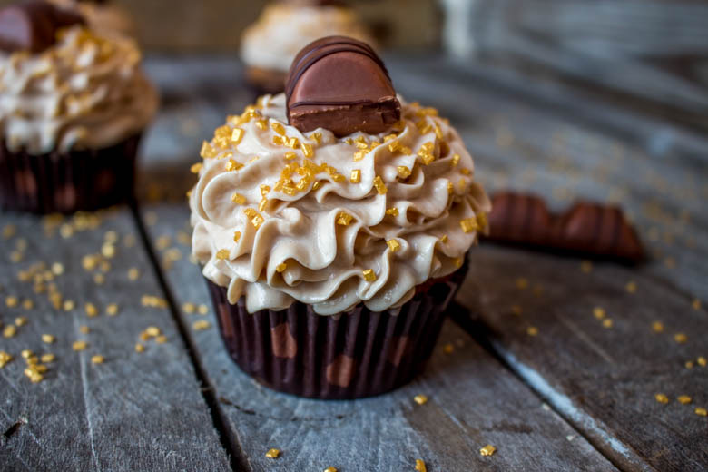
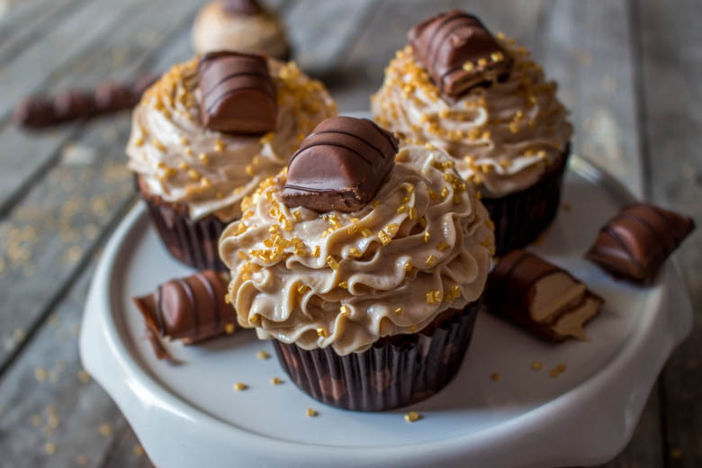
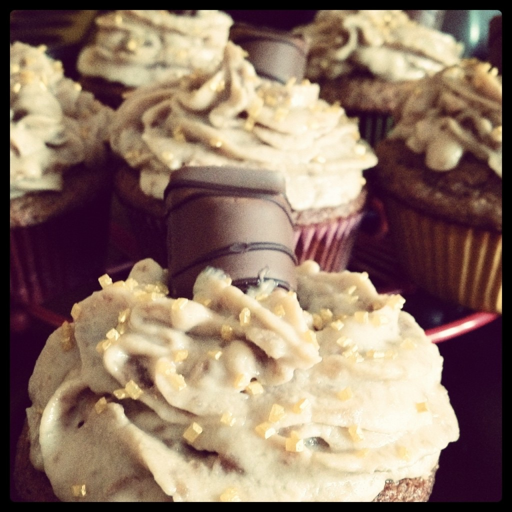

Cupcake Kinder Bueno

Les cupcakes kinder bueno ou plutôt comment tout a commencé…
Pour la petite histoire avant je cuisinais mais ça c’était avant car plus tard il y a eu les cupcakes et j’ai adoooooré le fait de pouvoir réinventer sans cesse une déco en fonction de mes envies, des saisons, des thèmes que l’on me proposait. Je passais quelques fois des nuits entières à préparer des cupcakes! C’était et c’est toujours une vraie passion :). J’essaye de ne pas abuser (j’aimerais éviter de ressembler moi même à un cupcake géant) mais c’est à chaque fois un vrai délice.
C’est tout naturellement alors que je partage aujourd’hui avec vous l’un de mes chouchou; le cupcake kinder bueno 🙂 avec un glaçage à base de mascarpone (c’est une recette que je fait très très souvent)
Cette recette bénéficie d’un petit bonus vidéo! En effet, je vous ai filmé la recette car c’est celle qui a eu le plus de visites depuis le début du blog (comme quoi c’est votre chouchou à vous aussi)! Cette première vidéo est une façon également de vous remercier d’être de plus en plus nombreux à me suivre et à m’encourager à continuer!
Je ne sais pas si le fait d’avoir une recette en vidéo vous plait alors n’hésitez pas à me donner vos avis! Je m’excuse d’avance pour les petites erreurs (de cadrage notamment) car c’est la toute première et forcément il y a eu des petits bugs!
Je vous laisse découvrir la recette de mes cupcakes kinder bueno et je vous dis à très vite pour une prochaine recette!
Ingrédients
- Farine - 90 gr
- oeuf - 1
- fromage blanc - 2 càs
- nutella - 2 càs
- huile de tournesol - 25 ml
- levure chimique - 10 gr
- sucre semoule - 35 gr
- extrait de vanille - 1 càc
- mascarpone - 250 gr
- sucre glace - 3 càs
- lait - 100 ml
- kinder bueno - 2 paires
- Kinder bueno
- Paillettes dorés
Instructions
- Préchauffer le four a 180°.
- Dans une petite casserole écraser 2 paires de kinder bueno
- A feu doux, ajouter le lait petit à petit
- Laisser bien fondre les kinder bueno
- Passer la préparation au chinois
- Mettre au réfrigérateur
- Dans un saladier fouetter l’œuf avec le sucre
- Mélanger la farine avec la levure et l'huile avec le fromage blanc et le nutella
- Ajouter la moitié du mélange farine-levure au mélange oeufs-sucre puis y incorporer la moitié du mélange huile-fromage blanc-nutella
- Bien remuer et recommencer dans le même ordre
- Mettre les caissettes dans les moules et les remplir au 3/4
- Cuire à 180° pendant 20 minutes
- A la sortie du four, les laisser refroidir
- Mélanger délicatement le mascarpone avec le sucre glace
- Ajouter tout en continuant de mélanger délicatement le mélange lait-kinder bueno refroidi précédemment préparé Pour comprendre le "mélanger délicatement" voir la vidéo tout en haut de l'article à 3min30, on ne veut surtout pas battre la crème et la rendre liquide
- Remettre au frais en attendant de glacer les cupcakes
- Mettre la douille de votre choix dans la poche à douille
- Insérer le topping qui sort de votre frigo et glacer vos cupcakes (attention, vos cupcakes doivent également avoir bien refroidis pour être glacés)
- Vous pouvez ensuite décorer avec des morceaux de kinder bueno , paillettes , etc..
- N'attendez plus vous pouvez tous les dévorer 🙂



Les tips de la communauté
Cupcakes très populaires avec beaucoup de retours positifs mais aussi plusieurs lecteurs ayant rencontré des difficultés avec le topping. La recette a besoin d'attention au glaçage pour réussir. Nombreux commentaires de satisfaction pour ceux qui ont bien suivi.
Astuces
- Bien refroidir le mélange kinder fondu COMPLÈTEMENT avant de l'incorporer au mascarpone
- Mélanger DÉLICATEMENT avec une spatule, ne pas fouetter le mascarpone
- Laisser le topping au frigo 30-40 min minimum avant d'utiliser, selon la texture obtenue
- Préparer le topping EN PREMIER avant les cupcakes, dès que le mélange kinder est assez froid
- Passer les kinder écrasés au tamis pour éliminer les morceaux de biscuit
- Cupcakes se conservent une bonne journée hors du frigo sans problème
Variantes suggérées
- Tester avec Kinder Bueno White selon préférence
- Ajouter Nutella au mélange pour plus de saveur chocolat
- Utiliser pour garnir des macarons
- Remplacer mascarpone par Philadelphia et fromage blanc par yaourt brassé (avec ajustements)
Ajustements signalés
- Si topping trop liquide : laisser reposer plus longtemps au frigo (ne pas fouetter qui aggrave le problème)
- La quantité de lait ne devrait pas dépasser 100ml (non 120ml comme indiqué parfois)
- Ne pas refrigérer les cupcakes sans topping pour éviter assèchement
- Bien verifier que mascarpone n'est pas déjà liquide avant utilisation